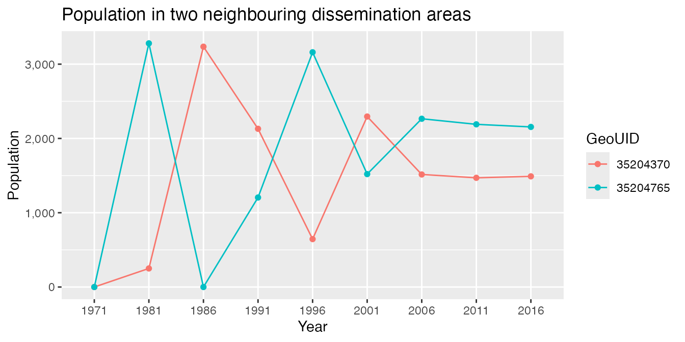
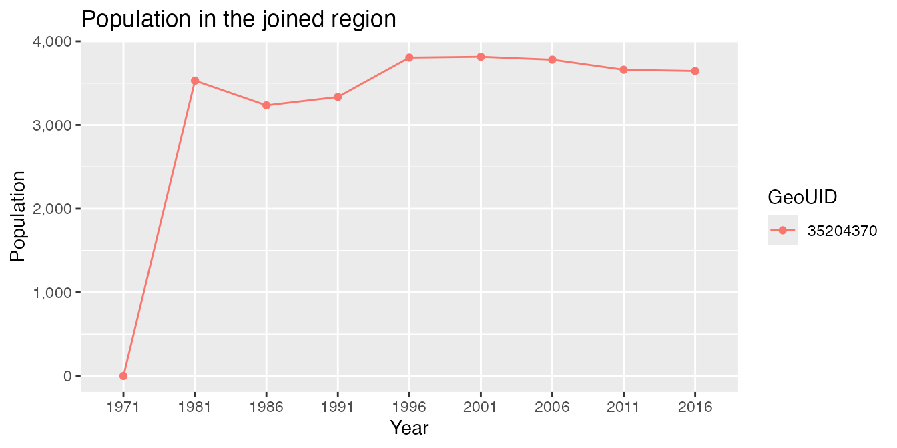
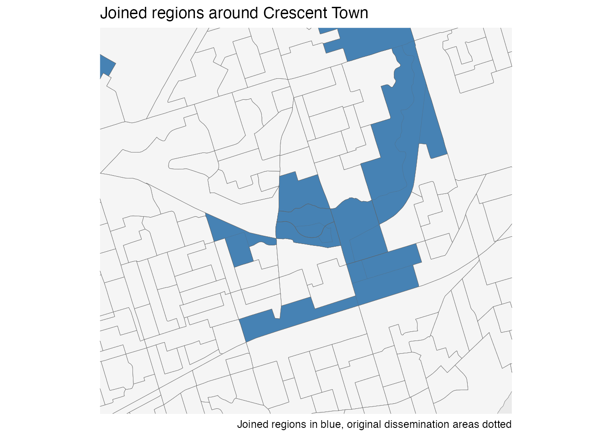

Geocoding anomalies in TongFen timelines
Jens von Bergmann
2026-10-04
Source:vignettes/tongfen_anomalies.Rmd
tongfen_anomalies.RmdTongFen makes data on different geographies comparable by aggregating it up to a common geography. The result is only as good as the geocoding that assigned the underlying data to geographic regions in the first place. Geocoding changes over time, and the same dwelling units, and the people living in them, can get assigned to different neighbouring regions in different years. In a timeline on a common geography this shows up as a surprising drop in one region that is offset by a jump in a neighbouring region.
The fix is in the spirit of TongFen, joining the affected regions gives a slightly coarser geography on which the data is consistent over time. The functions in this vignette look for such patterns and join the regions on demand. The method is explained in more detail in a blog post, this vignette follows the example from that post.
library(dplyr)
library(tidyr)
library(ggplot2)
library(cancensus)
library(sf)
library(tongfen)
# cancensus::set_api_key("<your cancensus API key>")Population timelines for Toronto
As an example we take the population from the 1971 through 2011 censuses that Statistics Canada tabulated on 2016 dissemination areas, together with the 2016 population. All data comes on the same geography, so there is no need to TongFen, but the data for the earlier years is geocoded from the road network and block face of the time, which does not always match up with 2016 dissemination areas.
years <- c(1971,seq(1981,2011,5))
vectors <- c(setNames(paste0("v_CA",years,"x16_1"),years),"2016"="v_CA16_1")
timeline <- names(vectors)
toronto <- get_census("CA16CT",regions=list(CSD="3520005"),vectors=vectors,
level="DA",geo_format="sf",quiet=TRUE) %>%
select(GeoUID,all_of(timeline)) %>%
mutate(across(all_of(timeline),\(x) coalesce(x,0)))Dissemination areas without population in a given year come back as missing values. Changes from or to a missing value are never considered surprising, so we set them to zero to mark these as areas where nobody got counted.
The area around Crescent Town shows what the problem looks like.
crescent_town <- c("35204370","35204765")
plot_timelines <- function(data) {
data %>%
st_drop_geometry() %>%
pivot_longer(all_of(timeline),names_to="Year",values_to="Population") %>%
ggplot(aes(x=Year,y=Population,colour=GeoUID,group=GeoUID)) +
geom_line() +
geom_point() +
scale_y_continuous(labels=scales::comma,limits=c(0,NA))
}
toronto %>%
filter(GeoUID %in% crescent_town) %>%
plot_timelines() +
labs(title="Population in two neighbouring dissemination areas")
The population jumps back and forth between the two areas, while the sum of the two is fairly steady from 1981 on. People did not move back and forth, their homes got geocoded to a different dissemination area in different years.
Detecting anomalies
tongfen_detect_anomalies lists the regions with
surprising drops. Only decreases are surprising, and a decrease needs to
be large in both relative and absolute terms. For each of these
candidate regions it finds the neighbouring region that takes away most
of the surprise when both are joined, and checks if that reduction is
large enough to justify joining them. Our regions are identified by
their GeoUID instead of the TongfenID the
function looks for by default.
anomalies <- tongfen_detect_anomalies(toronto,timeline,id="GeoUID",total_surprise_cutoff=0.4)
anomalies %>% filter(GeoUID %in% crescent_town)
#> # A tibble: 2 × 7
#> GeoUID surprise_count surprise_total period neighbour surprise_total_joined
#> <chr> <int> <dbl> <chr> <chr> <dbl>
#> 1 35204370 3 0.933 1991-1… 35204765 0.616
#> 2 35204765 2 1.03 1981-1… 35204370 0.142
#> # ℹ 1 more variable: join <lgl>Both areas are candidates, and each one is the neighbour that best explains the surprising drops of the other. Not all candidates find a neighbour to pair up with. Population does drop for real, for example when a site gets cleared for redevelopment, and such regions are left alone.
Joining regions
tongfen_anomaly_joins joins the regions that qualify and
looks again, joined regions can have surprising drops that are
complemented by another neighbour. This repeats until there are no more
regions left to join. The result lists the regions that got joined
together with the identifier of the joined region they are now part of
and the round in which they first got joined.
joins <- tongfen_anomaly_joins(toronto,timeline,id="GeoUID",total_surprise_cutoff=0.4)
joins %>% filter(GeoUID %in% crescent_town)
#> # A tibble: 2 × 3
#> GeoUID GeoUID_joined round
#> <chr> <chr> <int>
#> 1 35204370 35204370 1
#> 2 35204765 35204370 1tongfen_join_regions applies the joins to the data,
aggregating the variables and geometries of the regions that get joined
and leaving all others as they are.
toronto_joined <- tongfen_join_regions(toronto,joins,id="GeoUID")
c(original=nrow(toronto),joined=nrow(toronto_joined))
#> original joined
#> 3702 3430
toronto_joined %>%
filter(GeoUID %in% crescent_town) %>%
plot_timelines() +
labs(title="Population in the joined region")
The map shows the regions that got joined around Crescent Town.
bbox <- toronto %>% filter(GeoUID %in% crescent_town) %>% st_buffer(1500) %>% st_bbox()
ggplot(toronto_joined %>% mutate(joined=GeoUID %in% joins$GeoUID_joined)) +
geom_sf(aes(fill=joined),linewidth=0.1) +
geom_sf(data=toronto,fill=NA,linewidth=0.1,linetype="dotted") +
scale_fill_manual(values=c("TRUE"="steelblue","FALSE"="whitesmoke"),guide="none") +
coord_sf(datum=NA,xlim=bbox[c("xmin","xmax")],ylim=bbox[c("ymin","ymax")]) +
labs(title="Joined regions around Crescent Town",
caption="Joined regions in blue, original dissemination areas dotted")
Tuning
Joining regions trades geographic detail for consistency over time,
and how to best make that trade depends on the data and the application.
The parameters are documented in tongfen_detect_anomalies,
the most important ones are
-
rel_scaleandabs_scale, the relative and absolute decrease at which a change is half way to being fully surprising. The defaults of a 25% drop and a drop of 200 are tuned to population counts in regions of the size of dissemination areas. -
total_surprise_cutoff, how surprising the timeline of a region needs to be to become a candidate. The default of 0.75 is conservative, above we used 0.4 to also pick up less pronounced cases. -
cutoff_fact,surprise_reduction_constandsum_factdetermine how much of the surprise a neighbour needs to take away for the regions to get joined.
c(0.4,0.6,0.75) %>%
lapply(\(cutoff) tibble(total_surprise_cutoff=cutoff,
regions_joined=tongfen_anomaly_joins(toronto,timeline,id="GeoUID",
total_surprise_cutoff=cutoff) %>%
nrow())) %>%
bind_rows()
#> # A tibble: 3 × 2
#> total_surprise_cutoff regions_joined
#> <dbl> <int>
#> 1 0.4 477
#> 2 0.6 273
#> 3 0.75 152Neighbours are by default determined by intersecting the geometries
of the regions. This can miss neighbours if the geometries have been
simplified, in that case the neighbours argument takes a
table with the identifiers of neighbouring regions or a neighbours list
from the spdep package.
Anomalies in TongFen data
The functions work the same way on data on a common geography built
by TongFen, where the regions are identified by their
TongfenID. As an example we look at the dissemination area
level population in the City of Vancouver for the 2001 through 2021
censuses.
regions <- list(CSD="5915022")
datasets <- c("CA01","CA06","CA11","CA16","CA21")
meta <- meta_for_additive_variables(datasets,"Population")
vancouver <- get_tongfen_ca_census(regions=regions,meta=meta,level="DA",base_geo="CA21",quiet=TRUE)
joins <- tongfen_anomaly_joins(vancouver,paste0("Population_",datasets),total_surprise_cutoff=0.4)
joins
#> # A tibble: 4 × 3
#> TongfenID TongfenID_joined round
#> <chr> <chr> <int>
#> 1 59150762 59150762 1
#> 2 59153181 59150762 1
#> 3 59150765 59150765 1
#> 4 59150770 59150765 1Passing the metadata to tongfen_join_regions makes sure
the variables get aggregated the right way, numeric variables that are
not part of the metadata are assumed to be additive.
vancouver_joined <- tongfen_join_regions(vancouver,joins,meta)The TongfenUID of the joined regions lists all the
dissemination areas they are made up of.
vancouver_joined %>%
st_drop_geometry() %>%
filter(TongfenID %in% joins$TongfenID_joined) %>%
select(TongfenID,TongfenUID,starts_with("Population"))
#> # A tibble: 2 × 7
#> TongfenID TongfenUID Population_CA21 Population_CA01 Population_CA06
#> <chr> <chr> <int> <dbl> <dbl>
#> 1 59150762 GeoUIDCA01:59150762… 1412 1148 1266
#> 2 59150765 GeoUIDCA01:59150765… 4082 1895 2499
#> # ℹ 2 more variables: Population_CA11 <dbl>, Population_CA16 <dbl>Variables that are not additive, like averages, can only be aggregated this way if the variable they are averaged over is part of the data. The alternative that always works is to join the regions in the correspondence the common geography was built from, and use the joined correspondence to aggregate the original data. This also is the way to use the joins for data other than the one that was used to detect the anomalies, for example to get average rents on the corrected geography.
correspondence <- get_tongfen_correspondence_ca_census(geo_datasets=datasets,regions=regions,
level="DA",quiet=TRUE) %>%
tongfen_join_correspondence(joins)
rent_meta <- meta_for_ca_census_vectors(c(rent_2006="v_CA06_2050",rent_2016="v_CA16_4901"))
rent_data <- c("CA06","CA16") %>%
lapply(\(ds) get_census(ds,regions=regions,level="DA",labels="short",quiet=TRUE,
vectors=rent_meta %>% filter(geo_dataset==ds) %>% pull(variable),
geo_format=if (ds=="CA16") "sf" else NA) %>%
rename(!!paste0("GeoUID",ds):="GeoUID")) %>%
setNames(c("CA06","CA16"))
rents <- tongfen_aggregate(rent_data,correspondence,rent_meta,base_geo="CA16")
rents %>%
st_drop_geometry() %>%
filter(TongfenID %in% joins$TongfenID_joined) %>%
select(TongfenID,rent_2006,rent_2016)
#> # A tibble: 2 × 3
#> TongfenID rent_2006 rent_2016
#> <chr> <dbl> <dbl>
#> 1 59150762 452. 674.
#> 2 59150765 474. 913.